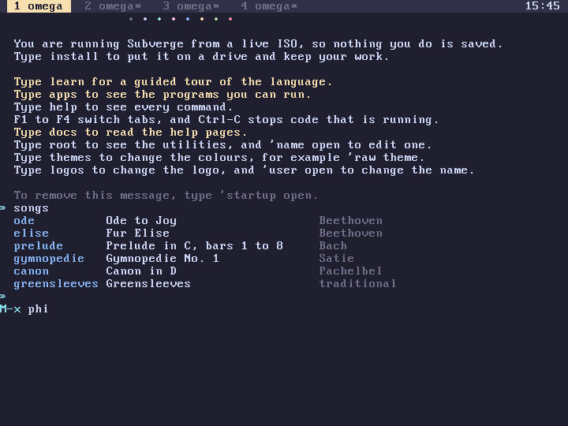
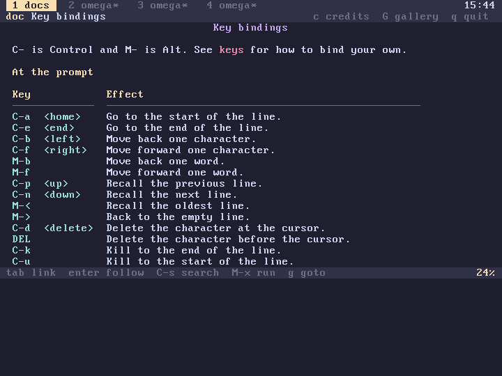

subverge
subvergeKey Map
- Everywhere
- At the prompt
- Help keys
- In the pages
- In the editor
- Your own keys
- Limits
- The mouse
- Key codes in programs
C- is Control and M- is Alt, so C-k is Ctrl-K and M-f is Alt-F. DEL is Backspace, RET is Enter, SPC is Space and TAB is Tab. A key sequence such as C-x o is two keys typed one after the other.
Everywhere
| Key | Action |
|---|---|
| F1 to F4, Alt-1 to Alt-4 | show tab 1, 2, 3 or 4 |
| C-c, C-g | stop the line the tab is running |
| C-x o | move to the other window |
| C-x 2, C-x 3 | split the window, stacked or side by side |
| C-x 1 | keep only this window |
| C-x 0 | close this window |
| Super-Enter | open a window, see tabs |
| Super-W | close this window |
| Super-arrows | move to the window in that direction |
The keys are handled in the keyboard interrupt, so they work while every tab is busy. After C-x the top bar shows C-x - until the next key. C-g cancels the sequence.
At the prompt
The kill ring remembers the last eight killed pieces of text, and keys that kill twice in a row add to the same piece.
| Key | Action |
|---|---|
| RET | run the line |
| C-a, Home | start of the line |
| C-e, End | end of the line |
| C-b, Left | back one character |
| C-f, Right | forward one character |
| M-b, M-f | back or forward one word |
| C-p, Up | the previous line from the history |
| C-n, Down | the next line from the history |
| M-<, M-> | the oldest line, or back to an empty one |
| C-d, Delete | delete the character at the cursor |
| DEL | delete the character before the cursor |
| C-k | kill to the end of the line |
| C-u | kill to the start of the line |
| C-w, M-DEL | kill the word before the cursor |
| M-d | kill the word after the cursor |
| C-y | yank the last kill |
| M-y | replace the yank with an older kill |
| C-t | swap the two characters at the cursor |
| M-u, M-l, M-c | upper case, lower case or capitalize the next word |
| C-_ | undo the last change to the line |
| C-l | clear the screen and draw the prompt again |
| C-r, C-s | search the history, backward or forward |
| TAB | complete the name before the cursor |
| M-x | run a word by name, with completion |
| C-c, C-g | throw the line away |
A word here is a run of characters that are not spaces, brackets or quotes, so kill-line is one word. In a search, typing narrows the match, C-r and C-s move to the next one, DEL shortens the text, C-g puts the line back as it was and any other key ends the search with the match in the line. RET ends the search without running the line.
See prompt for completion, history and line length.

Help keys
C-h waits for a second key.
| Key | Action |
|---|---|
| C-h k | press a key and see what it does |
| C-h f | describe a word, as 'name help does |
| C-h a | search the help text, as apropos does |
| C-h b | open the list of every binding |
| C-h i | open the help pages |
describe-key is the word behind C-h k. It prints what the key does at the prompt, in the pager and in the editor, and the quote of a binding of yours.
The list of every binding is a page of its own, opened by C-h b or bindings:

In the pages
docs opens the index and "name" doc opens a page.
| Key | Action |
|---|---|
| TAB, n | the next link |
| BTAB, p | the previous link |
| RET | follow the link, or run the selected code line |
| SPC, C-v, Page Down | scroll a screen |
| M-v, Page Up | scroll a screen back |
| C-n, Down | scroll a line |
| C-p, Up | scroll a line back |
| M-<, <, Home | the top |
| M->, >, End | the bottom |
| l, DEL | back to the last page |
| t | the index |
| c | the credits page |
| G | close the pager and show the gallery |
| g | go to a page by name |
| C-s, C-r | search the page for text, forward or backward |
| M-x | close the pager and run a word |
| C-h b | the list of bindings |
| q, ESC, C-x C-c | leave the viewer |
C-s and C-r ask for text on the bottom row. An empty answer repeats the last search. RET on a code line closes the viewer and runs the line at the prompt.
In the editor
scrawl uses the same keys for moving, killing and searching. The list is on its page.
Your own keys
bind takes a key name and a quote and runs the quote when the key is typed at the prompt:
"C-t" [ "dup " insert ] bind
Now C-t types dup into the line. A key name is written as in this page: "C-k", "M-u", "<up>", or a sequence that starts with C-x such as "C-x C-t". Plain printable keys can't be bound, since they type text, and neither can C-h or RET.
The quote can use the line being edited:
| Word | Effect |
|---|---|
line@ |
-- s, the line |
line! |
s --, replaces the line |
point@ |
-- n, the cursor position from 0 |
point! |
n --, moves the cursor |
insert |
s --, types a string at the cursor |
"M-u" [ line@ upper line! ] bind
makes M-u turn the whole line into capitals. These words only work inside a binding. A binding that prints something leaves its output above a new prompt, and the line you were editing comes back below it. A binding can run any line of code with eval, so this one shows the system information on M-s:
"M-s" [ "sys" eval ] bind
A binding runs on a copy of the stack, so what it leaves there is dropped, and an error in it is printed on the line below before the prompt comes back.
A binding is a definition named key: and the key, such as key:C-t, so it is saved with the tab's world like any other definition. A binding made in a root unit works in every tab.
| Word | Effect |
|---|---|
bind |
key q --, binds the key |
unbind |
key --, removes a binding of yours |
bindings |
--, opens the list of every binding |
describe-key |
--, waits for a key and says what it does |
"C-t" unbind
Limits
- The prompt has no mark and no region. C-w kills the word before the cursor, and C-u kills to the start of the line. scrawl has a mark and a region, and C-w kills the region there.
- C-x and C-h are the only prefix keys, and keys take no numeric argument.
- ESC doesn't work as the Meta key. Use Alt.
- The search at the prompt is incremental. The searches in the pager and in the editor ask for the whole text first and then jump to the match.
- C-x C-s and C-x C-c belong to the editor. C-x o, C-x 0, C-x 1, C-x 2 and C-x 3 work everywhere.
The mouse
A PS/2 mouse works on the text screen. The pointer is an inverted cell. A click on a tab title in the top bar switches to that tab, and a click in a window moves to it. In the page viewer a click follows a link or runs a code line, the wheel scrolls and a right click goes back. mouse returns the pointer cell in the current window and the buttons, and mouse? is 1 when a mouse was found (ps2).
Key codes in programs
The codes that key returns are listed on the keyboard page.